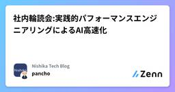

Nishika Tech Blogのフィード
https://zenn.dev/p/team_nishika
Nishika公式テックブログです。 「テクノロジーを、普段テクノロジーからは縁の遠い人にとっても当たり前の存在とする」を目標に、 音声認識AIプロダクトSecureMemo/SecureMemoCloudを中心とした事業を展開しています。
フィード

FastAPIのDI(Depends)の実装で気を付けていること
Nishika Tech Blogのフィード
はじめにこんにちは、AIエンジニアの髙山です。普段は音声認識・話者認識・LLM周りのR&Dや、プロダクトのAI部分の開発・運用を主に担当しています。一方で、受託案件などを含めて、アプリケーションエンジニアリング寄りの開発に関わることもあります。最近FastAPIに触れる機会があり、Dependsを使ったDIについて考えることがありました。DI（Dependency Injection / 依存性の注入）は、クラスや関数が必要とする依存オブジェクトを、自分で生成せずに外側から受け取る設計手法です。FastAPIでは、このDIを実現する仕組みとしてDependsが用意されて...
4日前

【Nishika 論文サク読み 第15回】SpeechCueLLM
Nishika Tech Blogのフィード
こんにちは。NishikaでAIエンジニアとしてインターンをしている笠原です。インターンを始めて4か月ほど経ち、社内の方々のおかげで徐々に業務にも慣れ楽しく働いています。Nishikaでは持ち回りで週一で論文のサク読み記事を出しており、私は前々から興味があった音声の感情認識についての論文を読みました。 論文Beyond Silent Letters: Amplifying LLMs in Emotion Recognition with Vocal Nuances (NAACL 2025)和題：無音の文字を超えて：声のニュアンスによるLLMの感情認識能力の増幅図は論文から引...
4日前

社内輪読会:実践的パフォーマンスエンジニアリングによるAI高速化
Nishika Tech Blogのフィード
ご無沙汰しております。AIエンジニアの山口です。私がこの春初めて、社内勉強会の主催をやってみました。具体的には、以下になります。テーマ: 機械学習のパフォーマンスエンジニアリング期間: 2026/04~2026/06の3か月間開催頻度: 週1 (毎回1時間) 1. はじめに（概要・動機）まずは、パフォーマンスエンジニアリングについて簡単にご紹介します。目的: AIシステムの処理速度・レイテンシ・メモリ効率といった数値の改善主にやること計測・プロファイリング - どこがボトルネックになっているかを特定する最適化 - モデルの量子化・蒸留、推論エンジンの選...
7日前

【Nishika 論文サク読み 第14回】効率的な言語モデル HRM-Text
Nishika Tech Blogのフィード
こんにちは。NishikaでAIエンジニアとしてインターンをしている西尾です。まだ参加したばかりでわからないことも多くありますが、雰囲気がとても良く楽しく働けております。今回は業務の一環として、元々興味のあった言語モデルに関する論文を読んで紹介します。 論文HRM-Text: Efficient Pretraining Beyond Scaling 目的LLM の事前学習は、インターネット規模の生テキストと膨大な計算資源（数兆トークン・巨大GPU）を前提としており、基礎研究の参入障壁が極端に高い。。この計算量対性能比を劇的に下げ、事前学習を再び手の届くものにしたい。 ...
9日前
【Nishika 論文サク読み 第13回】音声を文字起こししながら固有表現も抽出する
Nishika Tech Blogのフィード
WhisperNER：音声を文字起こししながら固有表現も抽出する 論文項目内容タイトルWhisperNER: Unified Open Named Entity and Speech Recognition著者Gil Ayache, Menachem Pirchi, Aviv Navon, Aviv Shamsian, Gill Hetz, Joseph Keshet所属aiOla Research / Technion（イスラエル工科大学）出典arXiv:2409.08107v2（2025年8月）概要Whisper を拡張し...
18日前
Claude CodeでOSS更新を監視し、自社実装と照合して、NotionにR&Dチケットを自動起票するAIエージェント
Nishika Tech Blogのフィード
Nishika代表取締役CTOの松田です。Nishikaでは、毎週土曜の朝、誰も出社していない時間に、こんなことが自動で起きています。自社製品で利用するOSS repoについて、直近1週間の変更がスキャンされるその変更が 自社プロダクトの実装(どのバージョンをpinし、どのクラスを継承し、どの推論モードで使っているか) と照合される「自社にとって意味のある更新」だけが選別され、ファイルパス・行番号レベルで具体化された改善施策 がNotionのR&D TODOデータベースにチケットとして起票される月曜の朝、人間がやるのはBacklogに積まれたチケットを眺めて優先度を...
22日前
【Nishika 論文サク読み 第12回】Whisperの10倍速: Canary-1B-v2 & Parakeet-TDT-0.6B-v3
Nishika Tech Blogのフィード
論文https://arxiv.org/pdf/2509.14128 目的Whisperをはじめとする多言語ASRモデルは精度が高い一方で、大きくて遅いという課題がある。精度・サイズ・速度のトレードオフが常についてまわる。NVIDIAはこの課題に対し、25のヨーロッパ言語に対応しながら推論を高速化した2つのモデルを同時リリースした。Canary-1B-v2：ASR（文字起こし）＋AST（翻訳）の多機能モデルParakeet-TDT-0.6B-v3：ASR特化、速度を極限まで追求した小型モデルどちらも CC-BY-4.0（商用利用可）。https://hugging...
1ヶ月前
【Nishika 論文サク読み 第11回】Text-Embedding-to-Speech-Latent
Nishika Tech Blogのフィード
こんにちは。Nishika AIエンジニアの渡辺です。 論文Refining Pseudo-Audio Prompts with Speech-Text Alignment for Text-Only Domain Adaptation in LLM-Based ASR 目的音声認識（ASR）モデルは、学習時と異なるドメインでは性能が大きく落ちる。理想的にはターゲットドメインの音声データで微調整したいが、音声データの収集・アノテーションはコストが高く、テキストだけで適応させたいというニーズがある。近年主流のLLMベースASRは「音声エンコーダ＋プロジェクタ＋LLM」という構...
1ヶ月前
【Nishika 論文サク読み 第10回】Nemotron 3 Nano Omni
Nishika Tech Blogのフィード
こんにちは。NishikaのAIエンジニアの髙山です。テキスト、画像、動画・音声を入力としてネイティブサポートしつつ、高速な推論を実現しているということで興味を持ちましたので、紹介します。 論文タイトル：「Nemotron 3 Nano Omni: Efficient and OpenMultimodal Intelligence」公開日：2026年4月27日著者・組織: NVIDIA TL;DRNVIDIAがテキスト・画像・動画・音声をネイティブに扱えるオムニモーダルモデル Nemotron 3 Nano Omniを発表MoEバックボーン（30B-A3B）に...
1ヶ月前
Qwen3-ASRを日本語音声で微調整して日本語音声認識能力を向上する
Nishika Tech Blogのフィード
日本語の音声認識の課題Whisperの日本語音声認識は素晴らしいのですが、音としては合っているのに、漢字が違う、文脈的にありえない単語が紛れ込む、固有名詞が崩れるといった問題にしばしば遭遇します。これは、知識量がLLMと比べて圧倒的に足りていないのが一因かなと思います。例えば、Whisperの学習データは68万時間の音声をすべて英語の単語と考えて、テキスト換算するとおよそ80億トークン程度[1]。一方、Qwen3のような最新LLMは兆以上のトークンで学習されています。日本語に限ればこれより圧倒的にすくないので、日本語に関する知識はかなり乏しいと言えます。最近ではQwen3-AS...
1ヶ月前
【Nishika 論文サク読み 第9回】WhisperDiari
Nishika Tech Blogのフィード
こんにちは。Nishika AIエンジニアの松田です。Whisperで文字起こしするだけでなく「誰が話したか」まで扱いたいケースが業務でも増えているので、関連する論文をpickしてみました。 論文WhisperDiari: A Whisper-Based Speaker Diarization Framework in Token Space Leveraging Semantic and Speaker Information for Better Text Adaptability 目的複数話者の音声から「誰が・いつ・何を話したか」を推定するSpeaker Diariz...
2ヶ月前
【FastAPI検証】ファイルのアップロードはUploadFileよりStarletteのRequest.stream()のほうが速い
Nishika Tech Blogのフィード
こんにちは。NishikaのAIエンジニアの髙山です。FastAPIで大容量のファイルのアップロード機能を開発に着手しており、どの方式が速いのかを検証しましたので、その内容に共有します。 概要FastAPIの大容量ファイルアップロードAPIにおける、UploadFile（multipart/form-data）方式 vs Startletteの標準機能を使ったRequest.stream()（生ボディ）方式の読み込み速度比較。約3GBのファイルをローカルから読み込み、API受信〜一時ファイル化までの処理時間を計測しました。 やる前の仮説先行のベンチマーク（fastapi-...
2ヶ月前
【Nishika 論文サク読み 第8回】PHOTON: 階層構造で長文脈LLM推論を高速化
Nishika Tech Blogのフィード
こんにちは。NishikaでAIエンジニアとしてインターンをしている渡邊です。今回は、普段業務でも検証で様々なLLMを使っているなかでメモリバウンドの問題にはよく直面していたので、その構造的なボトルネックに切り込んだ論文をpickしてみました。簡単に紹介できればと思います。 論文タイトル: PHOTON: Hierarchical Autoregressive Modeling for Lightspeed and Memory-Efficient Language Generation出典: arXiv:2512.20687組織: 富士通株式会社 / 理研AIPセ...
2ヶ月前
フィラーを消さないASRを探して
Nishika Tech Blogのフィード
こんにちは。NishikaでAIエンジニアとしてインターンをしている渡邊です。Nishika主催のコンペで入賞したのをきっかけにインターン生として参画しました。初めてのインターンなのですが、裁量権がかなりあるように思えます。成果さえあればどこまでもタスクを任せていただけるという点がすごく合っていると感じています。今回は業務の一環として、フィラーを消さないASRを調べるという検証タスクを実行したので簡単に共有できればと思います。 はじめに音声認識で「精度が高い」というのは、一般的には文字起こしの正確さを意味します。しかしある業務文脈では、それだけでは不十分です。コールセンター...
2ヶ月前
【Nishika 論文サク読み 第7回】音声認識と大規模言語モデルの融合
Nishika Tech Blogのフィード
こんにちは。NishikaでAIエンジニアとしてインターンをしている笠原です。Nishika主催のコンペに参加したのをきっかけにインターンに参加しました。R＆D関連の業務に従事しており、普通の会社のインターンではあまりできない体験をさせていただいています。その一環として、最近のASR論文を読んだので簡単に共有できればと思います。 論文Speech Recognition Meets Large Language Model: Benchmarking, Models, and Exploration (AAAI 2025)和題：音声認識と大規模言語モデルの融合：ベンチマーク...
2ヶ月前
【FastAPI新機能】SSEネイティブサポートでAIチャットの処理が楽に書ける
Nishika Tech Blogのフィード
こんにちは。Nishika AIエンジニアの髙山です。弊社のAI議事録サービスのSecureMemoCloudでもAIチャット機能が搭載され、タイムリーにFastAPIの新機能でネイティブでSSE（Server Sent Event)をサポートしていたので紹介します。 概要FastAPI 0.135.0 / 2026-03-01SSE（Server-Sent Events）のネイティブサポートが追加された件のまとめ 新機能の内容EventSourceResponse と ServerSentEvent が fastapi.sse として公式に組み込まれ、SSEのネイティブ...
2ヶ月前
【Nishika 論文サク読み 第6回】生成AIによるレコメンドタスクのバイアス補正
Nishika Tech Blogのフィード
こんにちは。Nishika DSの並内です。Nishikaでは企業内へのLLM導入事業を行っています。その中で、汎用的に活用余地があるレコメンドタスクについて理解を深め、実務に活かすため関連論文を調査しました。 論文Large Language Models are Not Stable Recommender Systems (AAAI 2024) 目的LLMを推薦器として使うときには、候補アイテムの提示順で結果が大きく揺らぐ位置バイアスが存在する。これを補正し、レコメンドの安定性と精度を同時に向上させる。 手法論文ではSTELLA (Stable LLM for ...
2ヶ月前
【Nishika 論文サク読み 第5回】Voxtral Realtime
Nishika Tech Blogのフィード
こんにちは。Nishika AIエンジニアの李です。 論文タイトル: Voxtral Realtime出典: arXiv:2602.11298v2組織: Mistral AI公開日: 2026年2月21日モデル: HuggingFaceライセンス: Apache 2.0 目的リアルタイム音声認識における課題解決を目的とする：オフラインASRモデル（例：Whisperなど）は双方向自己注意機構に依存し、音声全体の入力を前提とするため、リアルタイム用途には不向きである。オフラインモデルをチャンク分割やスライディングウィンドウによってストリーミング化すると、学習時...
3ヶ月前
【Nishika 論文サク読み 第4回】EmoVoice
Nishika Tech Blogのフィード
こんにちは。Nishika AIエンジニアの山口です。voicevox等のパラメータベースのttsを超え、自然言語を使ったttsの研究がないか気になったので調べてみました。 論文EmoVoice: LLM-based Emotional Text-To-Speech Model with Freestyle Text Promptinggithubhuggingfaceリンクプレイグラウンド 目的「嬉しくて仕方がない様子で」「悲しみに明け暮れた後の月曜日の感じで」といったように、自由な形式の自然言語を用いて、細やかで直感的な感情のコントロールをttsで実現したい。...
3ヶ月前
【Nishika 論文サク読み 第3回】Qwen3-ASR
Nishika Tech Blogのフィード
こんにちは。Nishika AIエンジニアの渡辺です。 論文Qwen3-ASR Technical Report: Multilingual Speech Recognition and Forced Alignment 目的従来の音声認識モデルが抱える、長時間の音声文字起こし、ノイズ環境や歌声への堅牢性、多言語・方言の広範なカバーなどを解決したい。さらに、実運用で必要とされる字幕生成などのためのタイムスタンプ付与（Forced Alignment）において、言語固有の辞書に依存しない高精度で多言語対応可能な統合的アプローチを提供したい。 手法Qwen3-Omniを基盤...
3ヶ月前